At a glance
- I built a ray-traced digital twin of a hovering drone as seen by one communication radio.
- In simulation, it reproduces the blade-flash signature of the spinning rotors, and a detector tells drone present from drone absent.
- Checks on the simulator itself found a missing-path artifact and a dependence on the solver’s random seed before any map was trusted.
What I am working on
Small drones are hard to see by radio. They return weak echoes, fly low, and hover near the ground and buildings, which can echo far more strongly than the drone itself. Meanwhile, wireless networks are being designed to sense as well as communicate. In integrated sensing and communication (ISAC), a signal sent to carry data also works as a radar signal.
I am studying whether a single software-defined radio can detect a drone and pick up the signature of its spinning blades. The radio would send a 5G-NR-like signal and listen to its own echoes. To understand what it should see, I am building a digital twin: a simulation detailed enough to predict those echoes, and open enough to show where it might mislead.
How the twin works
The twin is a chain of steps, and each one can be inspected on its own.
- Scene. A 3-D outdoor scene: the radio, the ground, optional walls, and a quadcopter model whose blades turn over time.
- Ray tracing. NVIDIA Sionna RT traces the paths from the radio to the drone and back, including bounces off the ground.
- Waveform. The paths are applied to an OFDM signal (the multi-carrier waveform used in 4G and 5G) that carries known data.
- Sensing receiver. It compares the echoes with what was sent, removes echoes that stay constant, and turns delay into range and phase change into Doppler (speed toward or away from the radio).
- Maps. Range-Doppler maps, micro-Doppler spectrograms (Doppler over time) and detection maps.
The scene
Most results below come from one scene: a radio mounted low above flat ground, aimed at a quadcopter hovering a short distance away and higher up.
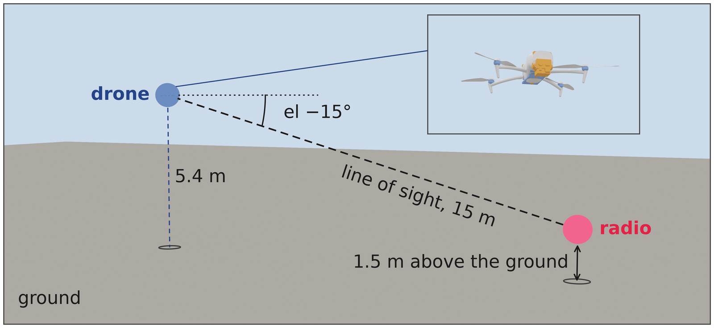
What the maps show
The maps in this section use the corrected ray-tracing output described under Checking the simulator first. A frame is a short block of the signal, and the maps here have no receiver noise unless stated.
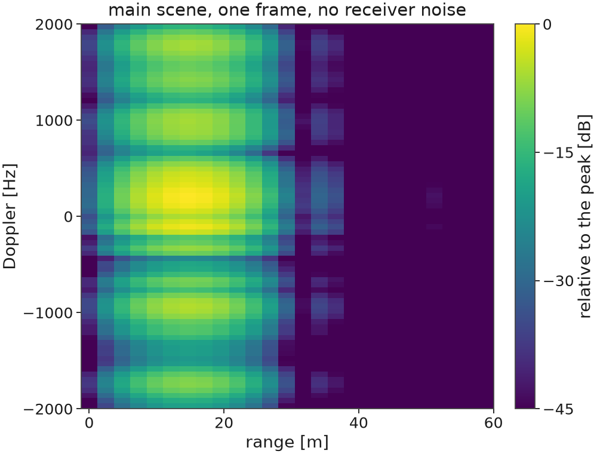
Range-Doppler map. Each cell shows how much echo arrives from a given range at a given Doppler speed. The hovering body barely moves, while the blades move fast toward and away from the radio, so the drone’s echo spreads across Doppler as a set of bands. The signal’s bandwidth limits how finely range can be resolved, so the drone is smeared along range rather than showing up as a sharp point.
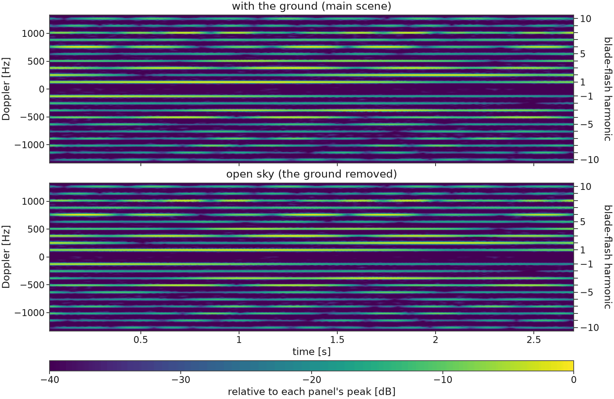
Micro-Doppler. This is the classic blade-flash signature: a blade turned broadside to the radio returns a short, strong echo, and regular flashes form lines at multiples of the flash rate. The dark band at zero is where the receiver removed everything that stays constant. Without the ground, the same lines appear, which suggests they come from paths via the drone rather than via the ground. Blade speed is a simulator input, so this checks timing and processing, not blade physics.
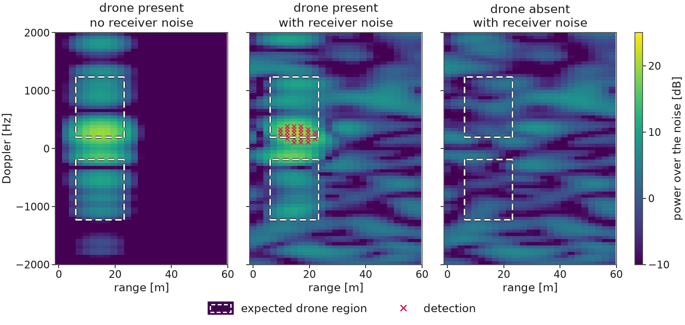
Detection map. The crosses come from a cell-averaging CFAR (constant false-alarm rate) detector, which compares each cell with the average of the cells around it. With the drone present, the detections cluster in the upper box, where this frame’s strongest band sits, and a few fall just below it. With the drone absent, the map stays quiet. The boxes sit at the known range, so this checks the detector, not a blind search over the map.
Checking the simulator first
A twin is only useful if you understand its output, so I checked each stage before trusting any map.
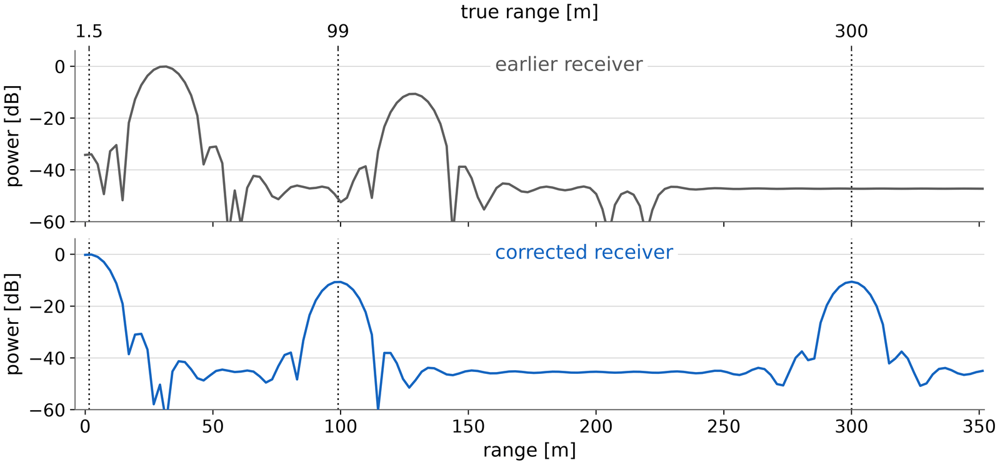
A known answer. Before any drone result, I ran a known-answer test: three point reflectors at known ranges, passed through the receiver. An earlier version placed the echoes too far away and lost the farthest one. The corrected receiver puts each peak where it belongs.
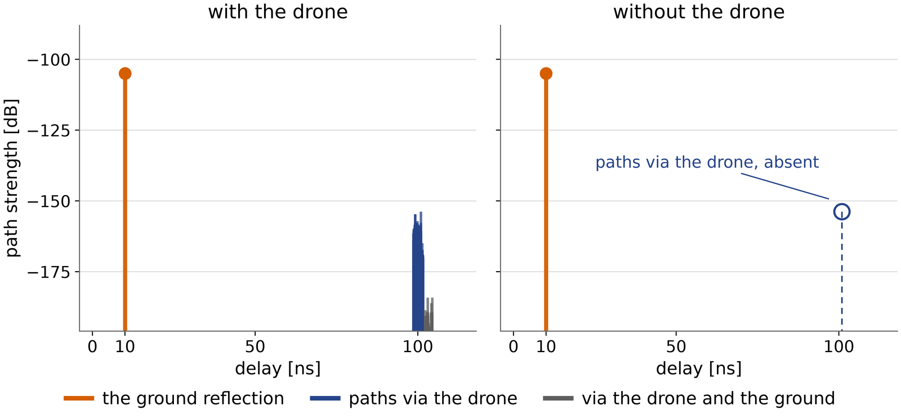
Raw paths before maps. Without the drone, one path remains: the radio’s reflection off the ground just below it, by far the strongest echo. In a small fraction of time steps, the stored ray-tracing output is missing it. I do not yet know why.
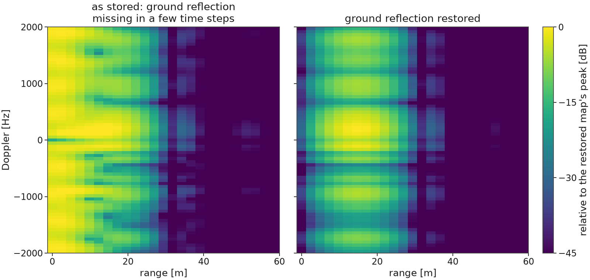
What the gaps do. Gaps in such a strong path spread its energy across all Doppler speeds, which paints the bright stripe near the radio in the map as stored. Restoring the path removes the stripe. This fixes the stored output, not the physics.
Repeatability. The ray tracer sends rays out in a fixed pattern, but at each bounce it makes random choices, such as whether a ray that hits the drone reflects like a mirror or scatters, and in which direction. A number called the seed controls those choices. To see how much this matters, I used a second scene, with the drone farther away and nearly level with the radio, and ran it again with the same seed and with different seeds.
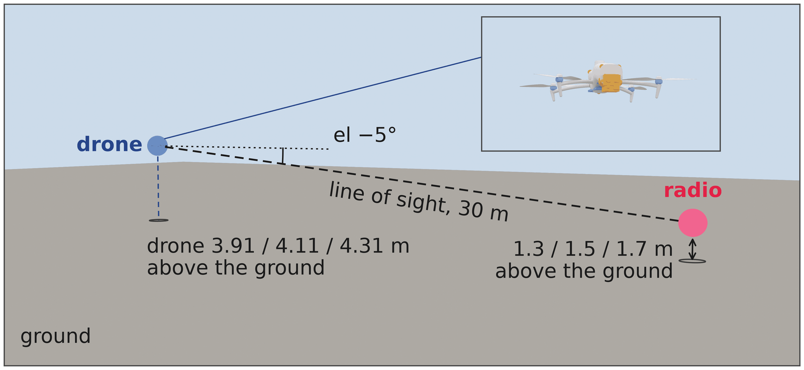
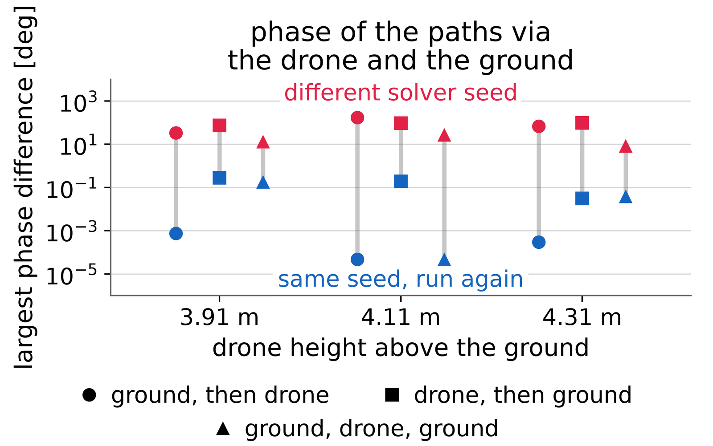
Re-running with the same seed reproduces these weak paths almost exactly, while a new seed shifts their phase by orders of magnitude more. Each run is therefore one random outcome, and conclusions need to hold across seeds.
Blade-flash signatures across environments (CW view)
The simulator turns the rotors forward in small steps and, at each step, adds up every ray-traced path at a single frequency. That is what a continuous-wave (CW) radar would receive: one steady tone, one sample per rotor step, and no range information. A short-time Fourier transform (Doppler over time, from short overlapping windows) turns that record into a blade-flash map. Ground, buildings and walls can echo far more strongly than the drone, or block the paths to it, so I placed the same hovering quadcopter in different surroundings: open sky, flat ground, buildings, the outdoor scene I built, NVIDIA’s built-in street canyon, and walls and parapets of different heights.
How to read the cards. Each card shows the rendered scene, then two maps of Doppler over time. The first map keeps the constant echo; the second removes it by cutting a narrow band around zero Doppler, much as the sensing receiver does. The band at zero in the first map looks wide only because each analysis window is short, not because anything in it moves, and the faint lines just outside it come from the same windowing. In every scene with ground or a wall, the still echo is so much stronger than the drone that the first map shows little besides this band, so those first maps look alike.
The dashed lines mark the blade-tip Doppler, the largest Doppler that blade motion alone produces in that geometry; the short window smears each flash slightly past them. Fainter speckle farther past the dashed lines, strongest in the wall and parapet cards, comes from the ray-tracing simulation rather than from the blades. Every map is scaled to its own peak, so the maps compare shapes, not strengths. In both maps, brief glitches in the stored ray-tracing output are smoothed over, so they do not show up as stripes; the repair is similar to the one in Figures 6 and 7, not identical. In the renders, the coloured markers only mark positions; the quadcopter itself is far smaller.
Same flashes as Figure 3, drawn differently. Figure 3 uses long analysis windows that span many flashes, so the repeating flashes add up to evenly spaced horizontal lines. Here each window is shorter than the gap between two flashes, so each flash shows up as its own burst in time. For the same reason, the narrow cut at zero Doppler, which shows as a dark band in Figure 3, is too narrow to see here.
Radio well below the drone
Five surroundings with one geometry: the radio a short distance from the drone and well below it, and the drone high above any ground. This is steeper than the main scene. The first four renders share one camera, so the markers sit in the same place in each.
Open sky Free space
{kind=link}
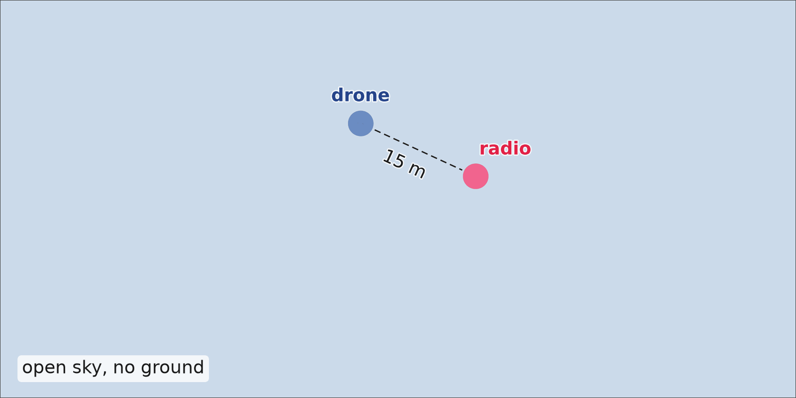

Flat ground only Built for this project
{kind=link}
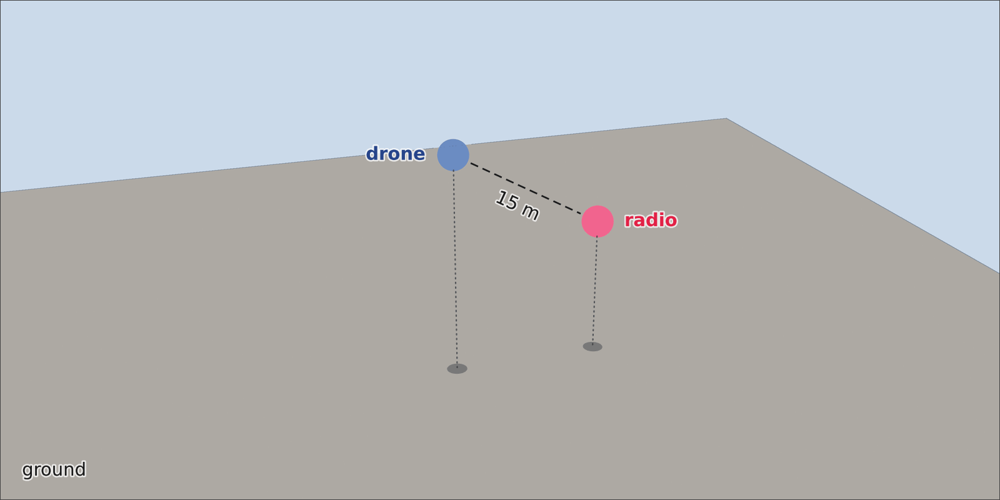
{kind=link}
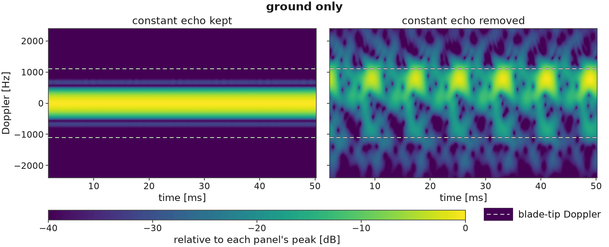
Buildings only Built for this project
{kind=link}
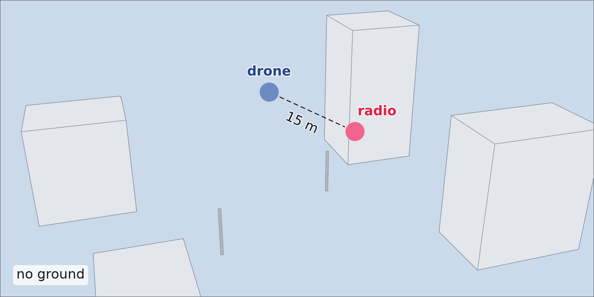
{kind=link}
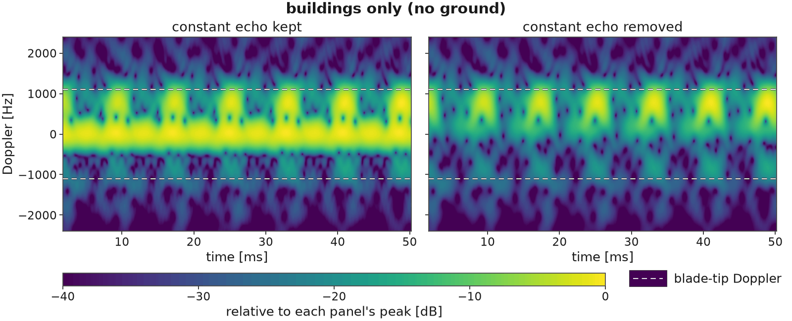
Our outdoor scene Built for this project
{kind=link}
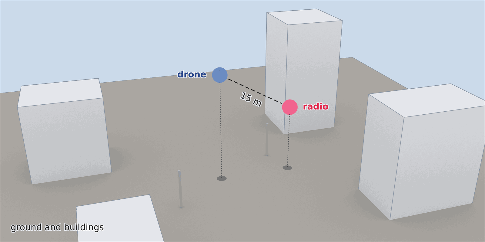
{kind=link}
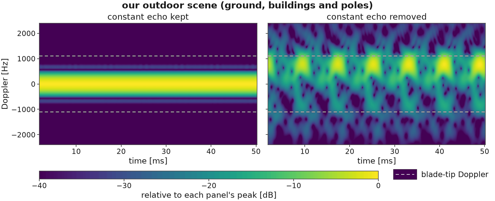
Street canyon NVIDIA built-in scene
{kind=link}
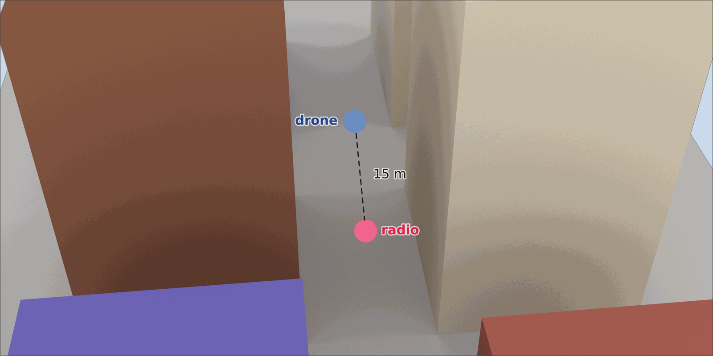
{kind=link}
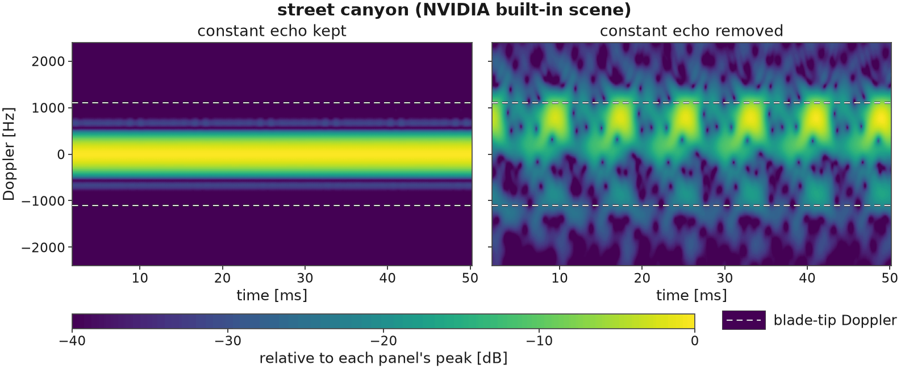
Second scene: walls and parapets
These cards use the second scene (Figure 8): the drone farther away and nearly level with the radio, with a concrete panel halfway between them. The panel is either a parapet whose top edge is raised step by step, as in Figure 10 under Next steps, or a tall wall whose edge sits on the line of sight. This group also uses an antenna aimed at the drone and different ray-tracing settings. Its maps come out denser and more symmetric about zero than those above, partly because the geometry differs. Much of the spread, including most of the energy past the dashed lines that reaches the top and bottom edges, comes from the ray-tracing simulation rather than from the blades. In this group, the ray-traced echoes jump more from one rotor step to the next. With another seed, that spread and much of the fine pattern come out differently, so read only the broad differences between these cards. Compare maps within a group rather than across the two groups.
Lowest parapet: blocks nothing Built for this project
{kind=link}
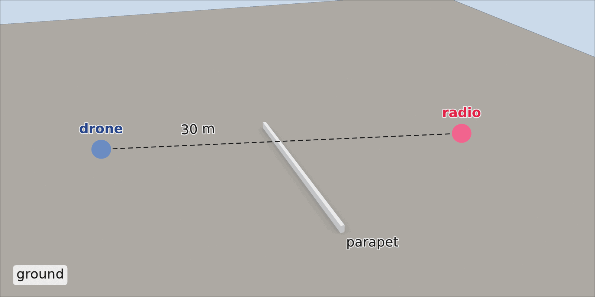
{kind=link}
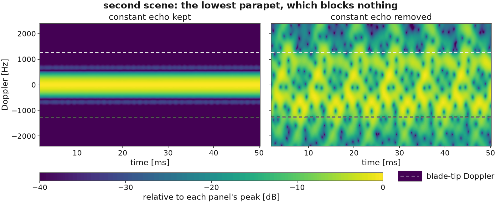
Parapet: blocks the ground bounce Built for this project
{kind=link}
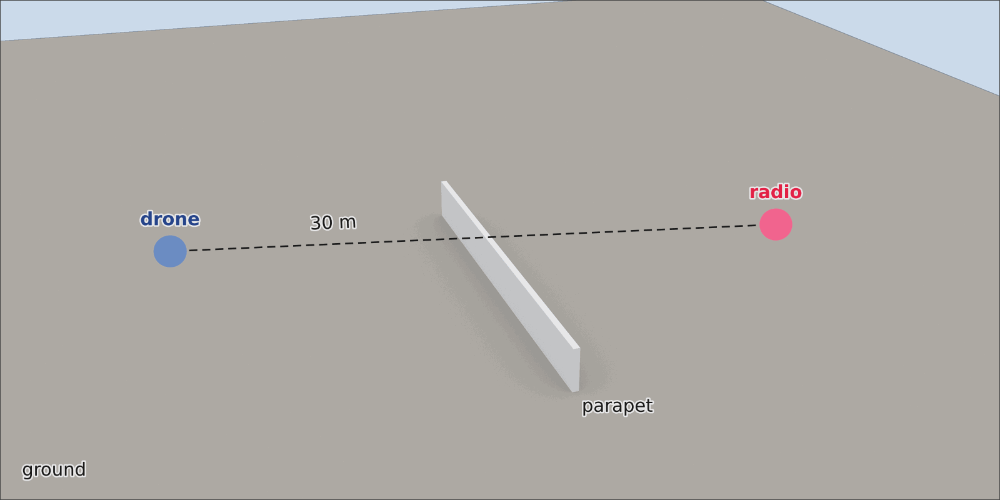
{kind=link}
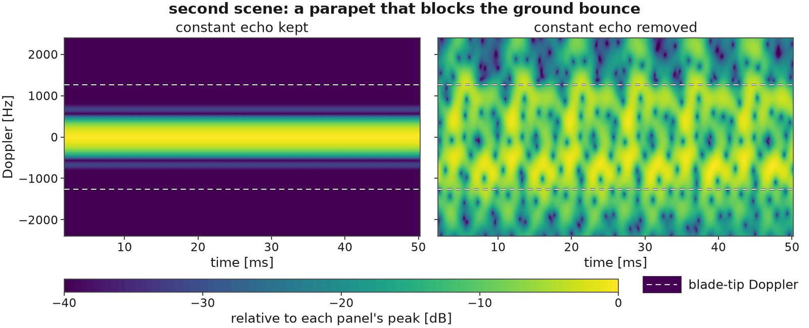
Wall edge on the line of sight: hides half the drone Built for this project
{kind=link}
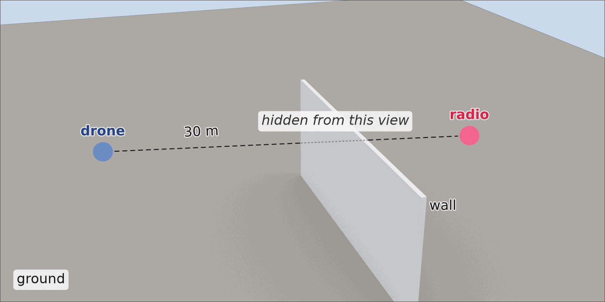
{kind=link}
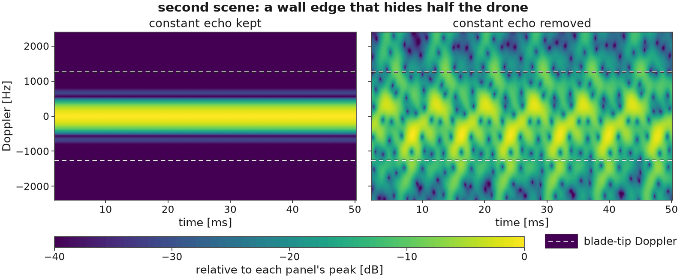
{kind=link}
{kind=link}
Side by side
In these simulations, surroundings that stay still mostly add a constant echo, which is why the receiver removes the zero-Doppler part first; the blade flashes underneath barely change. What changes the signature is hiding part of the drone from the radio, because that decides which parts of the rotors the radio can see. A parapet that cuts only the path via the ground leaves the map much like the reference. Each map is one short record from one geometry and one ray-tracing run, so these are qualitative observations.
![Nine spectrograms of Doppler versus time, all with the constant echo removed, with dashed blade-tip lines. First group, radio well below the drone: free space, ground only, buildings only, our outdoor scene and the NVIDIA street canyon all show nearly the same evenly spaced blade flashes, strongest at positive Doppler and inside the dashed lines. Second group, the second scene: the lowest parapet and the parapet show a repeating pattern on both sides of zero over a speckled background that spreads past the dashed lines, the wall edge shows a thinner pattern, shifted toward zero and the negative side, and the higher-parapet panel is empty.](../../images/20_stft_grid.png)
Next steps
Scenes under way
Further scenes add a low wall (parapet) and swap in other airframes. Here they are shown as setups for the full sensing chain; results from that chain are still being checked. A first CW look at the walls and parapets appears above, under Blade-flash signatures across environments.
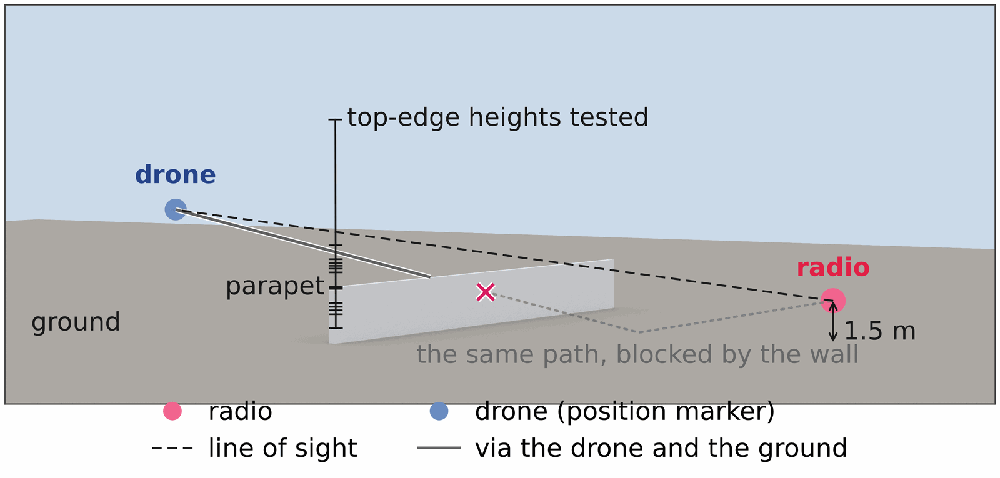
Status
This is ongoing, unpublished research. Everything shown here comes from simulation; no hardware measurements or real flights are shown, and the simulated radio front end is idealized. The figures are qualitative. Results will be reported once they are complete and checked. Code and data are not public yet.